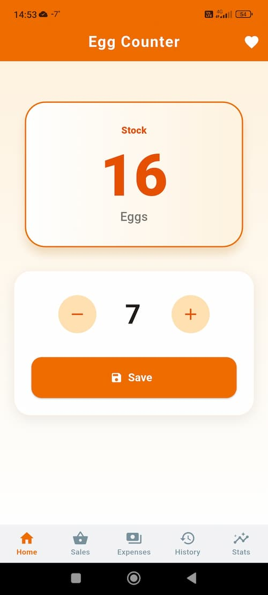
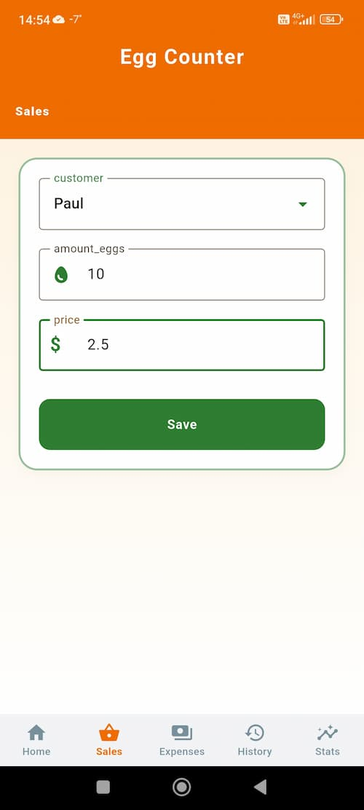
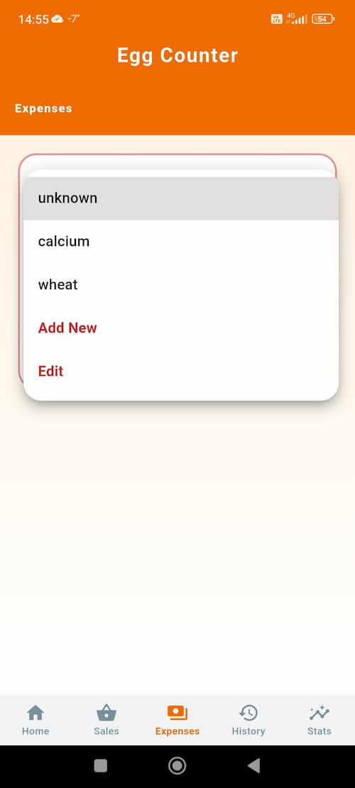
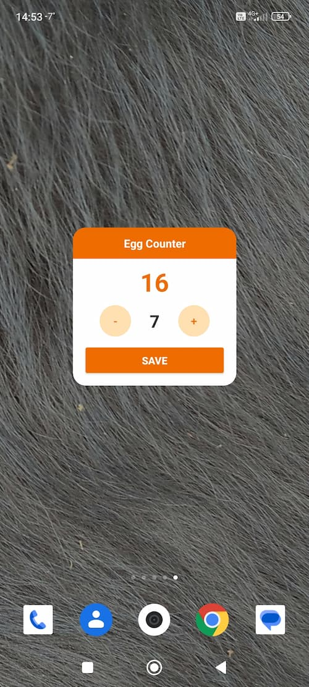
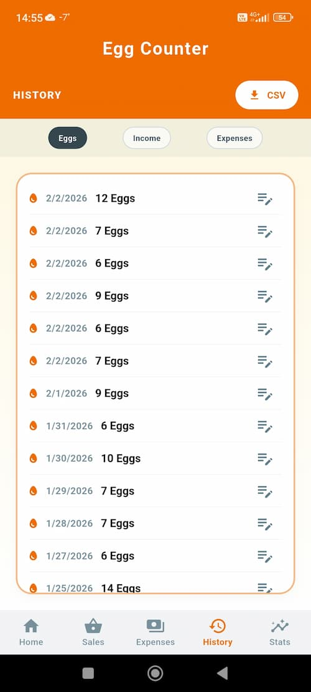
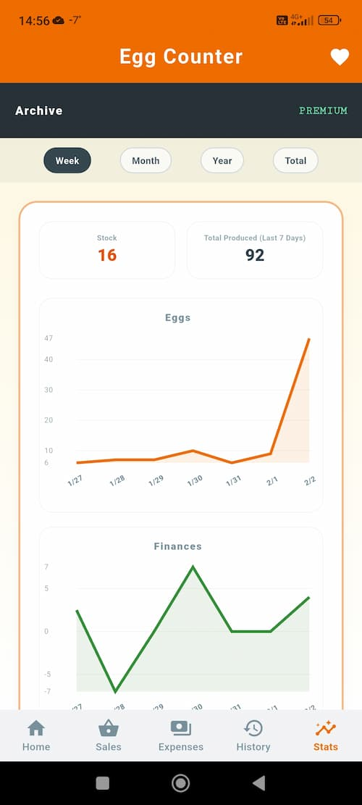

Ready to organize your henhouse?
Start tracking your eggs for free today.
Start with the free Easy mode to count eggs, record sales and track expenses in a few taps. When your flock grows, switch to Pro for groups, animals, feed, customers and your incubator.
Available in 16 languages, so tell all your chicken-loving friends and family around the world!

Two modes in one app. Pick the one that fits your flock. You can switch at any time.
For small backyard flocks. Quick entry, no complicated menus.
For growing flocks, several bird species and regular customers.
Add eggs with a single tap without opening the app. In Pro mode, add a separate widget for each group or bird species.
See what every egg really costs, who still owes you money and whether your hens are paying for their feed.
Manage several flocks and species. Add individual birds with photo and history, and record the reason when a bird leaves your flock.
Log your feed purchases. The app calculates your current stock and shows how many days it will last.
Track open amounts, set up regular orders with reminders and get notified when a pre-order exceeds your egg stock.
Reminders for turning, lockdown and hatch day, plus a logbook that tracks your eggs as you remove them.
Laying rate, break-even, cost per egg and per animal, feed cost trend, bird ages, egg sizes and the influence of weather on laying.
One account on several devices, so the whole family can collect eggs. Optional, and the only feature that uses the cloud.
Your records are stored on your device and work offline in both modes. Only the optional multi-user sync uses cloud storage.





Yes. Easy mode is free and stays free. Pro mode comes with a one month free trial, after which it is a paid upgrade. The current price is shown in Google Play.
Easy mode covers egg collection, sales, expenses and statistics for a simple flock. Pro mode adds groups and bird species, an animal manager, feed and customer management, an incubator assistant, advanced statistics and multi-user sync.
No. Your data is stored on your device and the app works offline in both modes. Only the optional multi-user sync needs an internet connection.
Yes. With multi-user sync in Pro mode, one account works on several devices, so everyone can add eggs to the same flock.
Yes. In Pro mode you can create groups for different bird species and track eggs, sales and expenses for each of them.
Yes. You can export your data as CSV and create backups to restore on a new device.
Not at the moment. Egg Counter is available for Android.
Start tracking your eggs for free today.